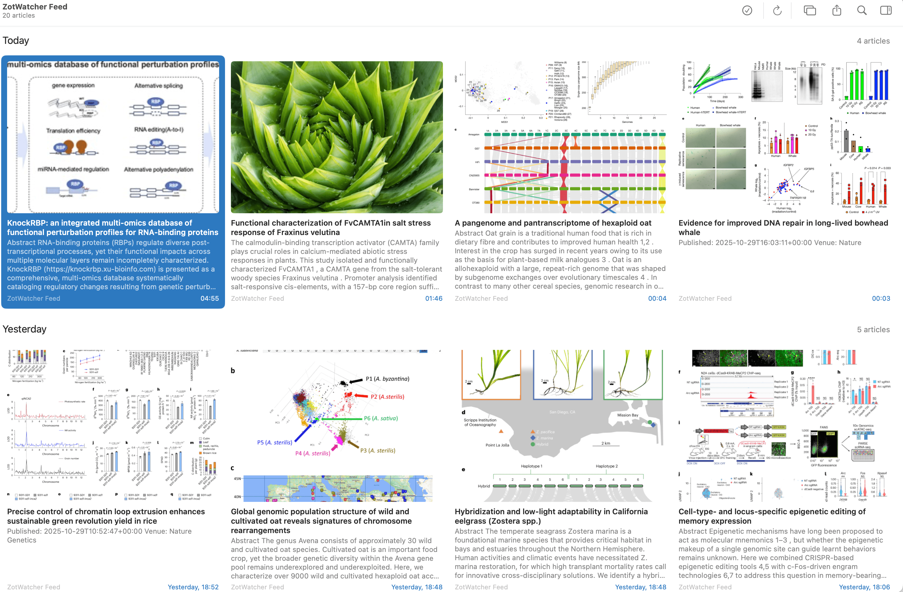

很长时间里，我追踪新发表文章的方式是用RSS订阅几个感兴趣的期刊网站，每天午休的时候去翻一翻，看有没有感兴趣的，同时也订阅了一些公众号，遇到感兴趣的文章推送就丢进稍后读列表。然而这一流程有几个比较膈应的点，一方面，RSS订阅对于专业领域内的期刊，其中能遇到自己感兴趣文章的概率较高，但是对于综合类期刊（比如CNS），大部分文章跨专业太远了，订阅其RSS大部分推送都是自己不感兴趣的；另一方面，专业相关的大文章公众号一般会发，但有些非国内作者或是中小文章，则很难见到推送，并且公众号的推荐排序真的是一言难尽。
因此，很希望能有更加贴合我阅读兴趣的文章追踪方式。也曾经想过靠关键词过滤等方式筛选，但关键词硬性匹配很容易过于严格，并且维护一份关键词库也绝非易事。前几年LLM兴盛后，动过一些靠AI来追踪文献的念头，但也没想好怎么合适地告知AI我的兴趣所在，并且将大量文章直接丢给AI进行筛选，每天消耗的token估计也少不了。
前些天偶然想到，既然我这几年已经在文献管理工具Zotero里积累了大量阅读过的文献，实际就应该以这些文献为种子，生成一份我的兴趣画像，然后再用这份画像去追踪文献。于是在用codex捣鼓了几天后，做了个脚本，这里暂且将其命名为ZotWatcher。下图为其在News Explorer中的订阅效果。

实现逻辑
**太长不看：**ZotWatcher会利用Zotero数据库中已有文章的信息，生成一份文献兴趣索引，再将每天运行时新发表的文章与索引进行比对，找到与已有兴趣打分较高的文章作为候选文章，生成RSS供我订阅。
详细版本
- 获取Zotero文献库：首先通过Zotero API获取个人积累的文献数据库，只是标题、摘要等文献元数据的话，Zotero并不限制储存容量。
- 构建文献信息索引：将读取到的文献元数据，通过TextVectorizer进行向量化，构建FAISS索引，同时生成一份概要统计文献，包含高频出现的期刊、作者等信息。
- 抓取候选文章：目前启用了Crossref、arXiv、bioRxiv/medRxiv的API作为新发表文章的来源，同时会根据统计到的高频期刊进行补充抓取。后续可能会加上Altmetric的热门文献。
- 文献打分：首先利用FAISS检索新获取文献与已有数据库的相似度，同时结合ScimagoJR的期刊SJR质量、时效性、作者等进行加权打分。
- 文献过滤：根据打分和指定的输出文献数量（默认是20，避免overwhelming），同时筛选只保留近七天内的文章、限制预印本比例不超过30%，获得最终输出。
- RSS生成：将候选文章整理成RSS格式，使用GitHub Actions每天早上6点运行，并把运行结果以GitHub Pages形式发布方便使用其他软件订阅。
如果你也想试试
本仓库地址为：ZotWatch
可以Clone或Fork后，需要在设置中配置几项必要信息，例如自己的ZOTERO_API_KEY与ZOTERO_USER_ID等，这些信息的获取方式请见README页面，这里就不赘述了。
每次检测到git push行为或次日六点后该仓库会自动运行，并生成结果。需要留意直接给出的GitHub Pages地址如果打不开，需要在末尾加上/feed.xml（因为没有生成对应的index页面，直接访问可能打不开）。